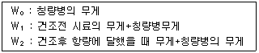

식품산업기사 (2017-05-07 기출문제)
1과목: 식품위생학
1. 식품의 방사능 오염에서 생성률이 크고 반감기도 길어 가장 문제가 되는 핵종만을 묶어 놓은 것은?
- 89Sr, 95Zr
- 140Ba, 141Ce
- 90Sr, 137Cs
- 59Fe, 131I
(정답률: 91%)

2. 다음 중 tar색소를 사용해도 되는 식품은?
- 면류
- 레토르트식품
- 어육소시지
- 인삼·홍삼음료
(정답률: 77%)
3. 식품과 유해성분의 연결이 틀린 것은?
- 독미나리 – 시큐톡신(cicutoxin)
- 황변미 – 시트리닌(citrinin)
- 피마자유 – 고시폴(gossypol)
- 독버섯 – 콜린(choline)
(정답률: 76%)
4. 식품공장 폐수와 가장 관계가 적은 것은?
- 유기성 폐수이다.
- 무기성 폐수이다.
- 부유물질이 많다.
- BOD가 높다.
(정답률: 84%)
5. 간디스토마의 제 1 중간숙주는?
- 붕어
- 우렁이
- 가재
- 은어
(정답률: 75%)
6. LD50에 대한 설명으로 틀린 것은?
- 한 무리의 실험동물 50%를 사망시키는 독성물질의 양이다.
- 실험방법은 검체의 투여량을 고농도로부터 순차적으로 저농도까지 투여한다.
- 독성물질의 경우 동물체중 1 kg에 대한 독물량(mg)으로 나타내며 동물의 종류나 독물경로도 같이 표기한다.
- LD50의 값이 클수록 안전성은 높아진다.
(정답률: 66%)
7. 민물고기의 생식에 의하여 감염되는 기생충증은?
- 간흡충증
- 선모충증
- 무구조충
- 유구조충
(정답률: 84%)
8. 건조식품의 포장재료로 가장 적합한 것은?
- 산소와 수분의 투과도가 모두 높은 것
- 산소와 수분의 투과도가 모두 낮은 것
- 산소의 투과도는 높고 수분의 투과도는 낮은 것
- 산소의 투과도는 낮고 수분의 투과도는 높은 것
(정답률: 79%)
9. 다음 중 식품을 매개로 감염될 수 있는 가능성이 가장 높은 바이러스성 질환은?
- A형 간염
- B형 간염
- 후천성면역결핍증(AIDS)
- 유행성출혈열
(정답률: 66%)
10. Clostridium botulinum 의 특성이 아닌 것은?
- 통조림, 병조림 등의 밀봉식품의 부패에 주로 관여된 균이다.
- 그람양성 간균으로 내열설 아포를 형성한다.
- 치사율이 매우 높은 식중독균이다.
- 100℃, 30초 정도 살균하면 사멸된다.
(정답률: 73%)
11. 포스트 하베스트(Post Harvest) 농약이란?
- 수확 후의 농산물의 품질을 보존하기 위하여 사용하는 농약
- 소비자의 신용을 얻기 위하여 사용하는 농약
- 농산물 재배 중에 사용하는 농약
- 농산물에 남아 있는 잔류농약
(정답률: 86%)
12. 다음 중 유해성이 높아 허가되지 않은 보존료는?
- 안식향산
- 붕산
- 소르빈산
- 데히드로초산나트륨
(정답률: 73%)
13. 아플라톡신(aflatoxin)에 대한 설명으로 틀린 것은?
- 생산균은 Penicillium 속으로서 열대 지방에 많고 온대지방에서는 발생건수가 적다.
- 생산 최적온도는 25~30℃, 수분 16% 이상, 습도는 80~85% 정도이다.
- 주요 작용물질은 쌀, 보리, 땅콩 등이다.
- 예방의 확실한 방법은 수확 직후 건조를 잘 하며 저장에 유의해야 한다.
(정답률: 80%)
14. 우유에 대한 검사 중 Babcock법은 무엇에 대한 검사법인가?
- 우유의 지방
- 우유의 비중
- 우유의 신선도
- 우유중의 세균수
(정답률: 51%)
15. 식품위생검사를 위한 검체의 일반적인 채취방법 중 옳은 것은?
- 깡통, 병, 상자 등 용기에 넣어 유통되는 식품등은 반드시 개봉한 후 채취한다.
- 합성착색료 등의 화학 물질과 같이 균질한 상태의 것은 가능한 많은 양을 채취하는 것이 원칙이다.
- 대장균이나 병원 미생물의 경우와 같이 목적물이 불균질할 때는 최소량을 채취하는 것이 원칙이다.
- 식품에 의한 감영병이나 식중독의 발생 시 세균학적 검사에는 많은 양을 채취하는 것이 원칙이다.
(정답률: 72%)
16. 종이류 등의 용기나 포장에서 위생 문제를 야기시킬수 있는 대표적인 물질은?
- Formalin의 용출
- 형광증백제의 용출
- BHA의 용출
- 2-mercaptoimidazole 의 용출
(정답률: 75%)
17. 다음 중 식육가공품의 발색제와 반응하여 형성되는 발암 물질은?
- 아세틸아민(acetyl-amine)
- 소명반(burnt alum)
- 황산제일철(ferrous sulfate)
- 니트로소아민(nitrosoamine)
(정답률: 82%)
18. 식품첨가물의 주요 용도의 연결이 바르게 된 것은?
- 규소수지 - 추출제
- 염화암모늄 - 보존료
- 알긴산나트륨 - 산화방지제
- 초산비닐수지 - 껌기초제
(정답률: 71%)
19. PCB에 대한 설명 중 틀린 것은?
- 미강유에 원래 들어 있는 성분이다.
- Polychlorinated biphenyl의 약어이다.
- 1968년 일본에서 처음 중독증상이 보고되었다.
- 인체의 지방조직에 축적되며, 배설속도가 늦다.
(정답률: 69%)
20. 대장균 O157 : H7의 시험에서 확인 시험 후 행하는 시험은?
- 정성시험
- 증균시험
- 혈청형 시험
- 독소시험
(정답률: 59%)
2과목: 식품화학
21. 밥을 상온에 오래 두었을 때 생쌀과 같이 굳어지는 현상은?
- 호화
- 호정화
- 노화
- 캐러멜화
(정답률: 84%)
22. 2N HCl 40mL와 4N HCl 60mL를 혼합했을 때의 농도는?
- 3.0N
- 3.2N
- 3.4N
- 3.6N
(정답률: 66%)
23. 닌히드린 반응(ninhydrin reaction)이 이용되는 것은?
- 아미노산의 정성
- 지방질의 정성
- 탄수화물의 정성
- 비타민의 정성
(정답률: 83%)
24. 유지의 가공 중 경화(hydrogenation)와 관련이 없는 것은?
- 경화란 지방산의 이중결합에 수소를 첨가하는 공정이다.
- 경화의 목적은 유지의 산화안전성을 높이는 것이다.
- 경화유에는 트랜스지방산이 들어 있지 않다.
- 경화유는 쇼트잉이나 마가린 제조에 이용된다.
(정답률: 74%)
25. 연유 중에 젓가락을 세워 회전시키면 연유가 젓가락을 따라 올라간다. 이런 성질을 무엇이라고 하는가?
- Weissenberg 효과
- 예사성
- 경점성
- 신전성
(정답률: 82%)
26. 식용유지의 발연점(smoke point)에 대한 설명으로 틀린 것은?
- 유지 중의 유리지방산 함량이 많을수록 발연점은 낮아진다.
- 유지를 가열하여 유지의 표면에서 엷은 푸름연기가 발생할 때의 온도를 말한다.
- 노출된 유지의 표면적이 클수록 별연점은 낮아진다.
- 식용유지의 발연점은 낮을수록 좋다.
(정답률: 72%)
27. 단맛의 큰 순서로 나열되어 있는 것은?
- 설탕 ＞ 과당 ＞ 맥아당 ＞ 젖당
- 맥아당 ＞ 젖당 ＞ 설탕 ＞ 과당
- 과당 ＞ 설탕 ＞ 맥아당 ＞ 젖당
- 젖당 ＞ 맥아당 ＞ 과당 ＞ 설탕
(정답률: 88%)
28. 소수성 졸(sol)에 소량의 전해질을 넣을 때 콜로이드 입자가 침전되는 현상은?
- 브라운 운동
- 응결
- 흡착
- 유화
(정답률: 66%)
29. 맛에 대한 설명으로 틀린 것은?
- 단팥죽에 소량의 소금을 넣으면 단맛이 더욱 세게 느껴진다.
- 오징어를 먹은 직후 귤을 먹으면 감칠맛을 느낄 수 있다.
- 커피에 설탕을 넣으면 쓴맛이 억제된다.
- 신맛이 강한 레몬에 설탕을 뿌려 먹으면 신맛이 줄어든다.
(정답률: 82%)
30. 염기성 아미노산이 아닌 것은?
- lysine
- arginine
- histidine
- alanine
(정답률: 54%)
31. 천연지방산의 특징이 아닌 것은?
- 불포화지방산은 이중결합이 없다.
- 대부분 탄소수가 짝수이다.
- 불포화 지방산은 대부분 cis형이다.
- 카르복실기가 하나이다.
(정답률: 73%)
32. 식품 중의 수분함량(%)을 가열건조법에 의해 측정할 때 계산식은?

- (W1-W0)/(W1-W2) × 100
- (W1-W0)/(W2-W1) × 100
- (W1-W2)/(W1-W0) × 100
- (W2-W1)/(W1-W0) × 100
(정답률: 63%)
33. 다음 중 감칠맛과 관계깊은 아미노산은?
- glycine
- asparagine
- glutamic acid
- valine
(정답률: 77%)
34. 전분의 노화억제와 관련이 없는 것은?
- 냉동
- 냉장
- 유화제 첨가
- 자당 첨가
(정답률: 75%)
35. 사람이나 가축의 장 내 미생물에 의해 합성되어 사용되는 비타민은?
- 비타민 B
- 비타민 K
- 비타민 C
- 비타민 E
(정답률: 67%)
36. 매운맛 성분으로 진저롤이 있는 것은?
- 마늘
- 생강
- 고추
- 후추
(정답률: 88%)
37. 칼슘(Ca)의 흡수를 저해하는 인자가 아닌 것은?
- 수산(oxalic acid)
- 비타민 D
- 피틴산(phytic acid)
- 식이섬유
(정답률: 78%)
38. 호화(糊化)된 전분이 갖는 성질이 아닌 것은?
- 점도의 증가
- 소화율의 증가
- 방향 부동성(anisotropy)의 손실
- 수분 흡수정도의 감소
(정답률: 60%)
39. 다음 중 동물성 스테롤(sterol)은?
- cholesterol
- ergosterol
- sitosterol
- stigmasterol
(정답률: 82%)
40. 단백질 분자 내에 티로신(tyrosine)과 같은 페놀(phenol) 잔기를 가진 아미노산의 존재에 의해서 일어나는 정색반응은?
- 밀론(Millon)반응
- 뷰렛(Biuret)반응
- 닌히드린(Ninhydrin)반응
- 유황반응
(정답률: 56%)
3과목: 식품가공학
41. 염장 원리에서 가장 주요한 요인은?
- 단백질 분해효소의 작용 억제
- 소금의 삼투작용 및 탈수작용
- CO2에 대한 세균의 감도 증가
- 산소의 용해도를 감소
(정답률: 79%)
42. 달걀의 저장법으로 부적합한 것은?
- 가스 냉장법
- 냉장법
- 도포법
- 온탕범
(정답률: 79%)
43. 통조림의 제조 주요 공정 순서가 바르게 된 것은?
- 밀봉 – 살균 - 탈기
- 탈기 – 밀봉 - 살균
- 살균 – 밀봉 - 탈기
- 살균 – 탈기 - 밀봉
(정답률: 60%)
44. 냉훈법에 비하여 온훈법의 장점이 아닌 것은?
- 고기가 더 연하다.
- 고기의 향기가 좋다.
- 고기의 맛이 좋다.
- 저장성이 우수하다.
(정답률: 80%)
45. 찹쌀과 멥쌀의 성분상 큰 차이는?
- 단백질함량
- 지방함량
- 회분함량
- 아밀로펙틴(amylopectin)함량
(정답률: 86%)
46. 햄, 소시지, 베이컨 등의 가공품 제조 시 단백질의 보수력 및 결착성을 증가시키기 위해 사용되는 첨가물은?
- M.S.G
- ascorbic acid
- polyphosphate
- chlorine
(정답률: 59%)
47. 치즈의 숙성률을 나타내는 기준이 되는 성분은?
- 수용성 질소화합물
- 유리 지방산
- 유리 아미노산
- 환원당
(정답률: 58%)
48. 통조림 식품의 변패 및 그 원인의 연결이 틀린 것은?
- 밀감 통조림의 백탁 : 과육 증의 hesperidin의 불용출
- 관 내면 부식 : 주석, 철 등 용기 성분의 이상요출
- 관 외면 부식 : 부식성 용수의 사용
- 다랑어 통조림의 청변 : met-Mb, TMAO, cytein의 관여
(정답률: 61%)
49. 식물성 유지에 대한 설명으로 옳은 것은?
- 건성유에는 올리브유, 땅콩기름 등이 있다.
- 불건성유에는 들기름, 팜유 등이 있다.
- 반건성유에는 대두유, 참기름, 미강유 등이 있다.
- 불건성유는 요오드값이 150 이상이다.
(정답률: 65%)
50. 물의 밀도는 1g/cm3이다. 이를 lb/ft3 단위로 환산하면 약 얼마인가? (단, 1lb는 454g, 1ft는 30.5cm로 계산한다.)
- 60.6 lb/ft3
- 62.5 lb/ft3
- 64.4 lb/ft3
- 66.6 lb/ft3
(정답률: 58%)
51. 일반적인 밀가루 품질시험 방법과 거리가 먼 것은?
- amylase 작용력 시험
- 면의 신장도 시험
- gluten 함량 측정
- protease 작용력 시험
(정답률: 67%)
52. HTST법(고온 단시간 살균법)은 72~75℃에서 얼마 동안 열처리하는 것인가?
- 0.5초 내지 5초간
- 15초 내지 20초간
- 1분간
- 5분간
(정답률: 82%)
53. 병류식과 비교할 때 향류식 터널건조기의 일반적인 특징으로 옳은 것은?
- 수분함량이 낮은 제품을 얻기 어렵다.
- 식품의 건조초기에 고온 저습의 공기와 접하게 된다.
- 과열될 염려가 없어 제품의 열손상을 적게 받고 건조속도도 빠르다.
- 열의 이용도가 높고 경제적이다.
(정답률: 48%)
54. 식품의 저장방법 중 식염절임에 대한 설명으로 틀린 것은?
- 염수과정에서 식염의 침투로 식염용액이 형성되고 여기에 육단백질이 용해되어 콜로이드용액을 만들어 수분을 흡수하는 경우도 있다.
- 일반적으로 식염농도가 증가하거나 온도가 높아지면 삼투압이 커지게 된다.
- 건염법은 염수법에 비하여 유지 산화가 많이 일어날 가능성이 있다.
- 식염 중에 칼슘염이나 마그네슘염이 들어있으면 식염의 침투속도가 높아진다.
(정답률: 41%)
55. 포도당 당량(DE:Dextrose equivalent)이 높을 때의 현상은?
- 점도가 떨어진다.
- 삼투압이 낮아진다.
- 평균분자량이 증가한다.
- 덱스트린이 증가한다.
(정답률: 42%)
56. 두류가공품 중 소화율이 가장 높은 것은?
- 된장
- 두부
- 납두
- 콩나물
(정답률: 77%)
57. 당도가 12%인 사과과즙 10kg을 당도가 24%가 되도록 하기 위하여 첨가해야 할 설탕량은 약 몇 kg인가?
- 1.2750 kg
- 1.5789 kg
- 2.3026 kg
- 2.5431 kg
(정답률: 45%)
58. 샐러드 기름을 제조할 때 탈납(winterization) 과정의 주요 목적은?
- 불포화 지방산을 제거한다.
- 저온에서 고체상태로 존재하는 지방을 제거한다.
- 지방 추출원료의 찌꺼기를 제거한다.
- 수분을 제거한다.
(정답률: 66%)
59. 아이스크림 제조 시 사용하는 안정제가 아닌 것은?
- 젤라틴(gelatin)
- 알긴산염(Na-alginate)
- CMC
- 구아닐산이나트륨(disodium 5'-guanylate)
(정답률: 50%)
60. 라면 한 그릇에 나트륨이 2000mg 들어 있다면, 이것을 소금양으로 환산하면 얼마인가?
- 5g
- 8g
- 12g
- 20g
(정답률: 53%)
4과목: 식품미생물학
61. 유기산과 생산 미생물과의 연결이 틀린 것은?
- 구연산 – Aspergillus niger
- 초산 – Acetobacter aceti
- 젖산 – Leuconostoc mesenteriodes
- 프로피온산 – Propionibacterium shermanii
(정답률: 49%)
62. 다음 중 koji 곰팡이의 특징과 거리가 먼 것은?
- Aspergillus oryzae group이다.
- 단백질 분해력이 강하다.
- 곰팡이 효소에 의하여 아미노산으로 분해한다.
- 일반적으로 당화력이 약하다.
(정답률: 75%)
63. 아황산펄프폐액을 사용한 효모생산을 위하여 개발된 발효조는?
- Waldhof형 배양장치
- Vortex형 배양장치
- Air lift형 배양장치
- Plate tower형 배양장치
(정답률: 68%)
64. 출아법으로 증식하며 포자를 형성하는 미생물은?
- Saccharomyces속
- Mucor속
- Rhizopus속
- Torulopsis속
(정답률: 53%)
65. 일반적으로 위균사(Pseudomycelium)를 형성하는 효모는?
- Saccharomyces 속
- Candida 속
- Hanseniaspora 속
- Trigonopsis 속
(정답률: 71%)
66. 미생물의 생육에 직접 관계하는 요인이 아닌 것은?
- pH
- 수분
- 이산화탄소
- 온도
(정답률: 75%)
67. 적당한 수분이 있는 조건에서 식빵에 번식하여 적색을 형성하는 미생물은?
- Lactobacillus plantarum
- Staphylococcus aureus
- Pseudomonas fluorescens
- Serratia marcescens
(정답률: 52%)
68. 독버섯의 독성분이 아닌 것은?
- enterotoxin
- neurine
- muscarine
- phaline
(정답률: 73%)
69. Bacteriophage의 설명으로 틀린 것은?
- 세균에 감염 기생하여 기생적으로 증식한다.
- 생물과 무생물의 중간 위치이다.
- DNA, RNA, 효소를 모두 가지고 있다.
- 살아있는 세포에만 기생한다.
(정답률: 69%)
70. Bacteriophage에 의해서 유전자 전달이 이루어 지는 현상은?
- 형질전환(transformation)
- 접합(conjugation)
- 형질도입(transduction)
- 유전자재조합(genetic recombination)
(정답률: 51%)
71. 누룩 곰팡이에 대한 설명으로 거리가 먼 것은?
- 단모균은 단백질 분해력이 강하다
- 장모균은 당화력이 강하다.
- 분생포자를 형성하지 않으며 끝이 빗자루 모양이다.
- 최적생육온도는 20~37℃이다.
(정답률: 68%)
72. 탄소원으로 포도당 1 kg에 Saccharomuces cerevisiae를 배양하여 발효시켰을 때 얻어지는 에틸알코올의 이론적인 최대 생성양은 약 얼마인가?
- 423g
- 511g
- 645g
- 786g
(정답률: 52%)
73. Acetobacter 속의 특성이 아닌 것은?
- Gram 음성의 무포자 간균이다.
- 혐기성균이다.
- 액체 배지에서 피막을 형성한다.
- 에탄올을 산화시킨다.
(정답률: 50%)
74. 에틸알코올 발효 시 에틸알코올과 함께 가장 많이 생성되는 것은?
- CO2
- CH3CHO
- C3H5(OH)3
- CH3OH
(정답률: 64%)
75. 조상균류에 속하는 곰팡이는?
- Fusarium 속
- Eremothecium 속
- Mucor 속
- Aspergillus 속
(정답률: 63%)
76. 생선이나 수육이 변패할 때 인광을 나타내는 원인균은?
- Bacillus coagulans
- Salmonella enteritidis
- Vibrio indicus
- Erwinia carotovora
(정답률: 64%)
77. 세균에 대한 설명으로 틀린 것은?
- 분열에 의해 증식한다.
- 내생포자를 형성할 수 있다.
- 형태에 따라 구분, 간균, 나선균 등으로 구분한다.
- 핵과 세포질이 핵막에 의해 구분된다.
(정답률: 55%)
78. 전분 당화력이 강해서 구연산 생성 및 소주제조에 사용되는 곰팡이는?
- Aspergillus flavus
- Penicillium citrinum
- Monascus purpureus
- Aspergillus niger
(정답률: 61%)
79. 미생물이 탄소원으로 가장 많이 이용하는 당질은?
- 포도당(glucose)
- 자일로오스(xylose)
- 유당(lactose)
- 라피노오스(raffinose)
(정답률: 83%)
80. 스위스치즈의 치즈눈 생성에 관여하는 미생물은?
- Propionibacterium shermanii
- Lactobacillus bulgaricus
- Penicillium requeforti
- Sterptococcus thermophilus
(정답률: 60%)
5과목: 식품제조공정
81. 열에 의한 변질 방지에 가장 적합한 것은?
- 저압 증발
- 진공 증발
- 단일 효용 증발
- 다중 효용 증발
(정답률: 72%)
82. 가열 팽화에 의한 전분의 호화를 이용한 식품의 가공 시 사용되는 기기는?
- 압출성형기
- 원심분리기
- 초임계장치
- 균질기
(정답률: 48%)
83. 와이어 메시체 또는 다공판과 이를 지지하는 구조물로 되어 있으며, 진동운동은 기계적 또는 전자기적 장치로 이루어지는 설비로, 미분쇄된 곡류의 분말 등을 사별하는 데 사용하는 설비는?
- 바스크린(Bar screen)
- 진동체(Vibration screen)
- 릴(Reels)
- 사이클론(cyclone)
(정답률: 67%)
84. r-선, X-선, 가시광선, 마이크로파 등의 광범위한 스펨트럼을 사용하는 광학적 방법에 의한 선별에 적절하지 않은 항목은?
- 숙도
- 색깔
- 크기
- 중심체의 이상여부
(정답률: 52%)
85. 같은 부피를 가진 다양한 형태의 딸기제품을 냉동시켰을 때 냉동전후에 일어나는 부피 변화가 가장 작은 것은?
- 딸기열매
- 거칠게 분쇄한 딸기 페이스트
- 딸기잼
- 딸기넥타
(정답률: 62%)
86. 식품 공장 내 공기를 살균하는 데 적절한 방법은?
- 마이크로파 살균
- 자외선 살균
- 가열 살균
- 과산화수소수 살포 살균
(정답률: 73%)
87. 식품 성분을 분리할 때 사용하는 막 분리법 중 관계가 옳은 것은?
- 농도차 - 삼투압
- 온도차 - 투석
- 압력차 - 투과
- 전위차 - 한외여과
(정답률: 78%)
88. 식품재료들 간의 부딪힘이나 식품재료와 세척기의 움직이에 의해 생기는 힘을 이용하여 오염물질을 제거하는 세척방법은?
- 마찰 세척
- 흡인 세척
- 자석 세척
- 정전기 세척
(정답률: 85%)
89. 상업적 살균에 대한 설명 중 옳은 것은?
- 통조림 관 내에 부패세균만을 완전히 사멸시킨다.
- 통조림 관 내에 포자 형성 세균을 완전히 사멸시킨다.
- 통조림 저장성에 영향을 미칠 수 있는 일부 세균의 사멸만을 고려한다.
- 통조림 관 내에 포자 형성 세균과 생활세포를 모두 완전히 사멸시킨다.
(정답률: 74%)
90. 다음 미생물 중 121.1℃에서 D값이 가장 큰 것은?
- Clostridium botulinum
- Clostridium sprogenes
- Bacillus sbtilis
- Bacillus stearothermophilus
(정답률: 39%)
91. 쌀도정 공장에서 도정이 끝난 백미와 쌀겨를 분리 정선하고자 한다. 이때 가장 효과적인 정선법은?
- 자석식 정선법
- 기류정선법
- 채정선법
- 디스크 정선법
(정답률: 56%)
92. 우유로부터 크림을 분리할 때 많이 사용되는 분리기술은?
- 가열
- 여과
- 탈수
- 원심분리
(정답률: 82%)
93. 초임계 유체의 설명으로 틀린 것은?
- 초임계 유체의 점도는 일정한 온도에서 압력변화에 민감하다.
- 초임계 유체의 확산도는 압력이 높아질수록 증가한다.
- 초임계 유체의 용해도는 압력이 높아질수록 증가한다.
- 임계점(critical point) 이상의 온도와 압력에서의 유체 상태를 초임계 유체라고 한다.
(정답률: 56%)
94. 가루나 알갱이 모양의 원료를 관 속으로 수송하기 때문에 건물의 안팎과 관계없이 자유롭게 배관이 가능하며, 위생적이고, 기계적으로 움직이는 부분이 없어 관리가 쉬운 특성을 지닌 수송 기계는?
- 벨트 컨베이어
- 롤러 컨베이어
- 스크류 컨베이어
- 공기 압송식 컨베이어
(정답률: 68%)
95. 식품원료 분쇄기 중 버밀(burr mill)의 특징에 대한 설명으로 틀린 것은?
- 이물질이 들어가면 쉽게 고장이 난다.
- 구입가격이 비싸다.
- 소요동력이 낮다.
- 공회전 시 판의 마모가 심하다.
(정답률: 49%)
96. 수분함량 12%인 옥수수가루를 사용하여 압출성형 스낵을 제조하고자 한다. 옥수수가루를 압출성형기에 투입하기 전에 수분함량을 18% 맞추어야 한다면 옥수수가루 10kg당 가해야 하는 물의 양은 얼마인가?
- 0.37kg
- 0.73kg
- 1.11kg
- 1.48kg
(정답률: 52%)
97. 카페인이 일부 제거된 커피를 생산하기 위해 적용해야 할 식품 제조 공정은?
- 미분쇄
- 압출 과립
- 압출 성형
- 초임계 가스 추출
(정답률: 64%)
98. 살균방법으로 적합하지 않은 것은?
- 0.1% 승홍수 살균
- 3% 석탄산액 살균
- 70% 알코올용액 살균
- 90% 메탄올 살균
(정답률: 73%)
99. 착즙된 오렌지 주스는 15%의 당분을 포함하고 있는데 농충공정을 거치면서 당함량이 60%인 농축 오렌지 주스가 되어 저장된다. 당함량이 45%인 오렌지 주스 제품 100kg을 만들려면 착즙 오렌지 주스와 농축 오렌지 주스를 어떤 비율로 혼합해야 하겠는가?
- 1 : 2
- 1 : 2.8
- 1 : 3
- 1 : 4
(정답률: 56%)
100. 식품의 건조방법과 그에 적합한 식품이 잘못 연결된 것은?
- 분무건조 - 우유
- 동결건조 - 설탕
- 드럼건조 - 이유식류
- 마이크로파 건조 – 칩(chip)
(정답률: 62%)